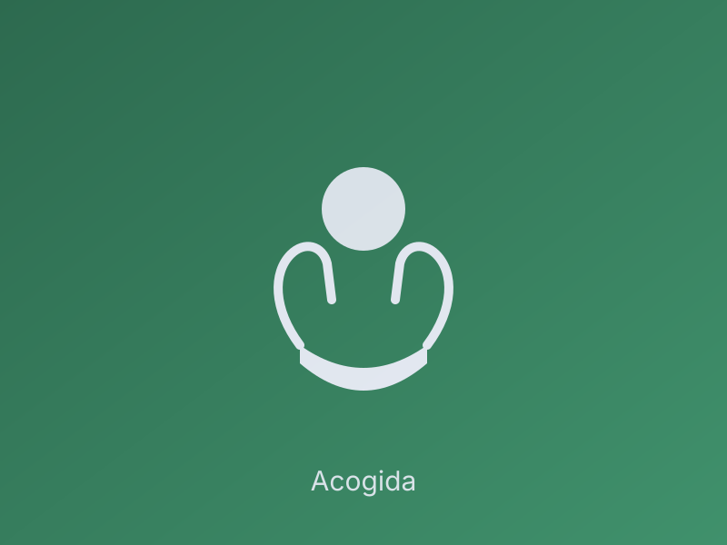
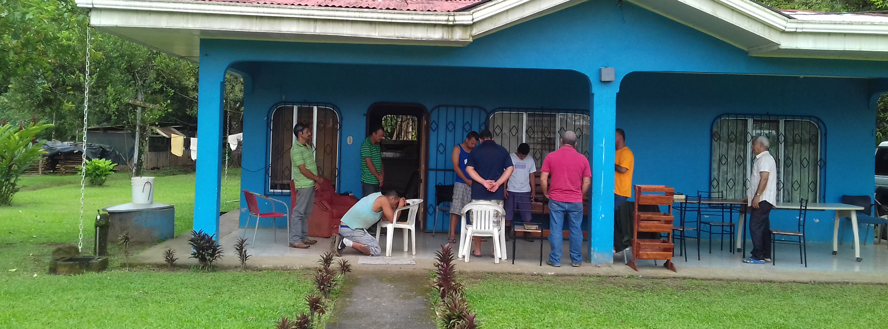
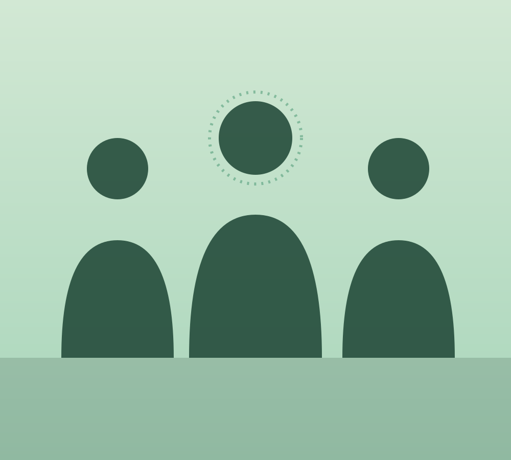
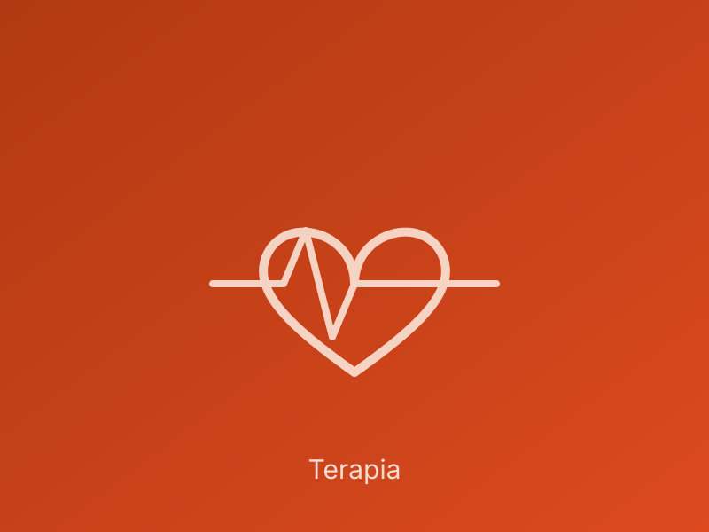
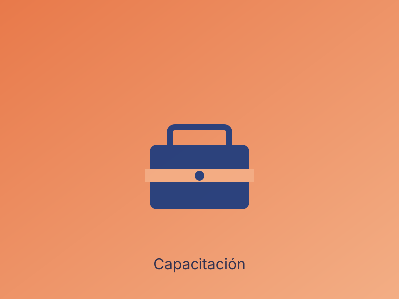
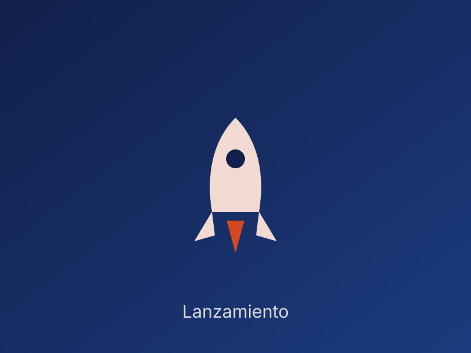

01. Acogida
Encuentro Radical
Aceptación inmediata y un entorno de seguridad controlada para el inicio.

Acompañamos a personas en situación de vulnerabilidad en un viaje de transformación real, combinando apoyo profesional con una comunidad que cree en las segundas oportunidades.

Más que números, somos una familia que crece cada día.
Facilitar un ecosistema de transformación integral donde individuos en situación de vulnerabilidad redescubran su potencial a través de metodologías innovadoras y acompañamiento empático.
Ser el referente de vanguardia en la restauración humana, integrando ciencia, fe y tecnología social.
Transparencia radical, amor operativo y excelencia en cada intervención técnica.
Un camino estructurado diseñado para el crecimiento personal sostenible.

Aceptación inmediata y un entorno de seguridad controlada para el inicio.

Terapia grupal y personalizada para desmantelar patrones de conducta nocivos.

Adquisición de habilidades profesionales para la reinserción en la economía.

Regreso a la sociedad como líderes comunitarios y ciudadanos íntegros.
Cada aporte es una semilla de cambio. Elige el método que mejor se adapte a ti para apoyar nuestra misión de transformación.
Recibimos ropa, alimentos y artículos de primera necesidad para nuestros beneficiarios.
BCR: CR05015201001012345678
BN: CR92015100010012345678
Céd. Jurídica: 3-002-XXXXXX
A nombre de: Fundación Jecani
8888-8888
Realiza tu donación de forma segura desde cualquier parte del mundo.
Donar con PayPal open_in_newDona con tu tarjeta BAC Credomatic a través de la plataforma Yo Me Uno, sin comisiones adicionales.
Donar en Yo Me Uno open_in_newTestimonios que nos impulsan a seguir adelante.
"Jecani no me dio una segunda oportunidad, me dio las herramientas para construir una vida que nunca creí merecer."
"Aprendí que mi pasado no era una cadena, sino un dato más en mi evolución. Hoy lidero mi propio emprendimiento."
"Como familia, recuperamos a nuestra hija. El acompañamiento no fue solo para ella, sino para todos nosotros."
Estamos aquí para escucharte y guiarte. Cada gran transformación comienza con un primer contacto humano.
Nuestra Sede
Calle Real, San José, Costa Rica
Teléfono
+(506) 2222-2222
Fundación Jecani vía Yo Me Uno
Cuéntanos qué te gustaría donar. Te llevaremos a la plataforma segura de Yo Me Uno para completar el proceso; allí deberás confirmar estos mismos datos.
Donación en Especie
Puedes acercar tu donación en especie a cualquiera de estos puntos, en el horario indicado.
Sede Principal
Calle Real, San José, Costa Rica
Próximamente
Más puntos de entrega en el país.
Conectemos en Redes
Sigue de cerca nuestra labor diaria y sé parte de la comunidad.